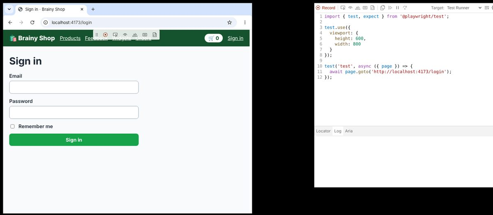
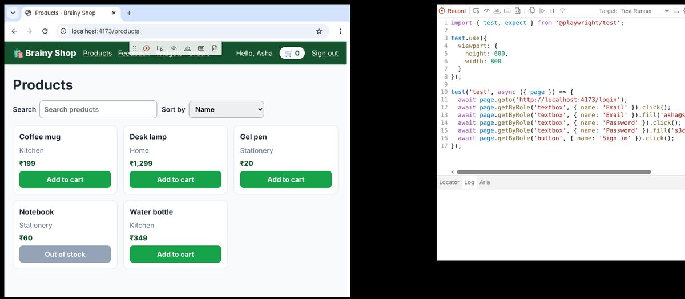
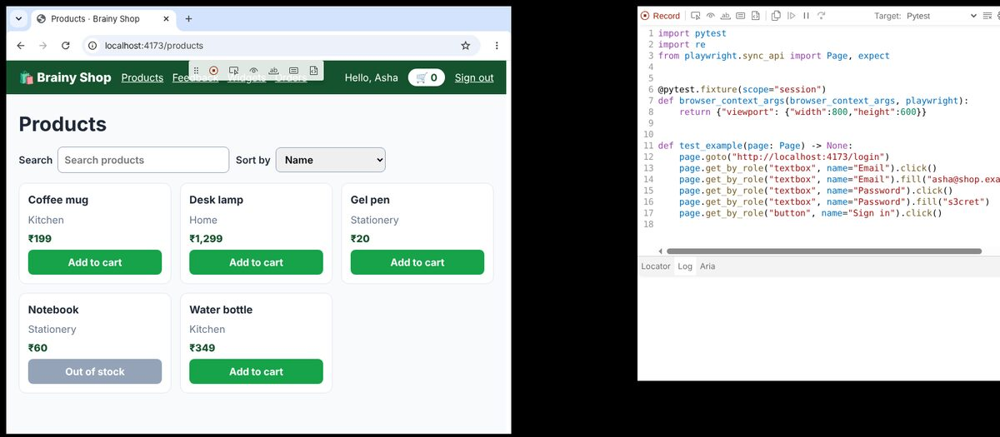
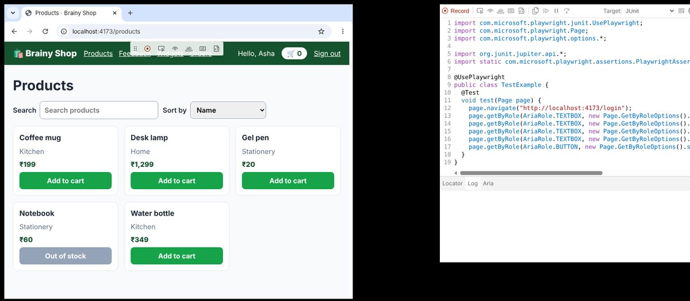

Install Playwright in Java, Python, JavaScript and TypeScript, walk through the files of a new project, record a test with codegen and run tests from the terminal like you will every day at work.
To start, you install your language, then the Playwright package, then the browsers it uses. Codegen can write a first test for you while you click around.
Every language needs its own runtime, plus the browsers that Playwright downloads. These are the requirements from the official installation pages for the current release.
| ☕ Java | 🐍 Python | 🟨 JavaScript and 🔷 TypeScript | |
|---|---|---|---|
| Runtime | Java 8 or later (this page uses Java 21) | Python 3.8 or later (this page uses 3.13, and the newest pytest needs 3.10) | Node.js 22, 24 or 26 |
| Package tool | Maven or Gradle | pip, Poetry or uv | npm, yarn or pnpm |
| Editor most teams use | IntelliJ IDEA | PyCharm or VS Code | VS Code with the Playwright extension |
| Operating system | Windows 11, macOS 14 or later, Debian 12 or 13, Ubuntu 22.04, 24.04 or 26.04 | same | same |
java -version, python --version or node --version. If the command is not found, the runtime is not on your PATH yet, and nothing below will work.Choose your language below. Each tab shows the commands you type, in order.
Java. Add one dependency to pom.xml. Add JUnit 5 too if you want the @UsePlaywright annotation that gives each test a page.
<dependency> <groupId>com.microsoft.playwright</groupId> <artifactId>playwright</artifactId> <version>1.63.0</version> </dependency>
Maven downloads the jar the first time you build. The first time your code calls Playwright.create(), it downloads the browsers too. To download them yourself, for example in a CI image, run the command line tool through Maven:
mvn exec:java -e -D exec.mainClass=com.microsoft.playwright.CLI -D exec.args="install --with-deps"
Python. Make a virtual environment, install the pytest plugin, then download the browsers.
python -m venv .venv source .venv/bin/activate # on Windows: .venv\Scripts\activate pip install pytest-playwright # installs playwright and pytest too playwright install --with-deps # downloads the browsers and the system libraries they need
JavaScript and TypeScript. One command creates the project, asks four questions and downloads the browsers.
npm init playwright@latest
It asks: TypeScript or JavaScript (TypeScript is the default), the name of the tests folder, whether to add a GitHub Actions workflow, and whether to install the browsers. In an existing project the same command adds Playwright to your package.json.
Now check what you have. These commands ran on the build machine of this page.
<project xmlns="http://maven.apache.org/POM/4.0.0"> <modelVersion>4.0.0</modelVersion> <groupId>com.brainy</groupId> <artifactId>shop-tests</artifactId> <version>1.0.0</version> <properties> <maven.compiler.release>21</maven.compiler.release> </properties> <dependencies> <dependency> <groupId>com.microsoft.playwright</groupId> <artifactId>playwright</artifactId> <version>1.63.0</version> </dependency> </dependencies> <build> <plugins> <plugin> <groupId>org.codehaus.mojo</groupId> <artifactId>exec-maven-plugin</artifactId> <version>3.5.1</version> </plugin> </plugins> </build> </project>
$ mvn -q exec:java -D exec.mainClass=com.microsoft.playwright.CLI -D exec.args="--version"
Version 1.63.0
$ pip list 2>/dev/null | grep -i playwright && python -m playwright --version
playwright 1.63.0 pytest-playwright 0.10.0 Version 1.63.0
$ npx playwright --version
Version 1.63.0
The Java and Python packages carry the same driver as the npm package, so all three print the same Playwright version. In Java the command line tool is the class com.microsoft.playwright.CLI, which Maven runs for you.
Playwright downloads its own browsers so that every machine tests with exactly the same versions. The --with-deps option also installs the operating system libraries the browsers need on Linux, which is what you want on a CI server.
$ mvn -q exec:java -D exec.mainClass=com.microsoft.playwright.CLI -D exec.args="install --dry-run chromium"
Chrome for Testing 153.0.8010.12 (playwright chromium v1243) Install location: /opt/pw-browsers/chromium-1243 Download url: https://cdn.playwright.dev/builds/cft/153.0.8010.12/linux64/chrome-linux64.zip FFmpeg (playwright ffmpeg v1011) Install location: /opt/pw-browsers/ffmpeg-1011 Download url: https://cdn.playwright.dev/dbazure/download/playwright/builds/ffmpeg/1011/ffmpeg-linux.zip Download fallback 1: https://playwright.download.prss.microsoft.com/dbazure/download/playwright/builds/ffmpeg/1011/ffmpeg-linux.zip Download fallback 2: https://cdn.playwright.dev/builds/ffmpeg/1011/ffmpeg-linux.zip Chrome Headless Shell 153.0.8010.12 (playwright chromium-headless-shell v1243) Install location: /opt/pw-browsers/chromium_headless_shell-1243 Download url: https://cdn.playwright.dev/builds/cft/153.0.8010.12/linux64/chrome-headless-shell-linux64.zip
$ playwright install --dry-run chromium
Chrome for Testing 153.0.8010.12 (playwright chromium v1243) Install location: /opt/pw-browsers/chromium-1243 Download url: https://cdn.playwright.dev/builds/cft/153.0.8010.12/linux64/chrome-linux64.zip FFmpeg (playwright ffmpeg v1011) Install location: /opt/pw-browsers/ffmpeg-1011 Download url: https://cdn.playwright.dev/dbazure/download/playwright/builds/ffmpeg/1011/ffmpeg-linux.zip Download fallback 1: https://playwright.download.prss.microsoft.com/dbazure/download/playwright/builds/ffmpeg/1011/ffmpeg-linux.zip Download fallback 2: https://cdn.playwright.dev/builds/ffmpeg/1011/ffmpeg-linux.zip Chrome Headless Shell 153.0.8010.12 (playwright chromium-headless-shell v1243) Install location: /opt/pw-browsers/chromium_headless_shell-1243 Download url: https://cdn.playwright.dev/builds/cft/153.0.8010.12/linux64/chrome-headless-shell-linux64.zip
$ npx playwright install --dry-run chromium
Chrome for Testing 153.0.8010.12 (playwright chromium v1243) Install location: /opt/pw-browsers/chromium-1243 Download url: https://cdn.playwright.dev/builds/cft/153.0.8010.12/linux64/chrome-linux64.zip FFmpeg (playwright ffmpeg v1011) Install location: /opt/pw-browsers/ffmpeg-1011 Download url: https://cdn.playwright.dev/dbazure/download/playwright/builds/ffmpeg/1011/ffmpeg-linux.zip Download fallback 1: https://playwright.download.prss.microsoft.com/dbazure/download/playwright/builds/ffmpeg/1011/ffmpeg-linux.zip Download fallback 2: https://cdn.playwright.dev/builds/ffmpeg/1011/ffmpeg-linux.zip Chrome Headless Shell 153.0.8010.12 (playwright chromium-headless-shell v1243) Install location: /opt/pw-browsers/chromium_headless_shell-1243 Download url: https://cdn.playwright.dev/builds/cft/153.0.8010.12/linux64/chrome-headless-shell-linux64.zip
--dry-run shows what would be downloaded and where, without downloading. On this build machine the variable PLAYWRIGHT_BROWSERS_PATH points to /opt/pw-browsers. On your own computer the default is ~/.cache/ms-playwright on Linux, ~/Library/Caches/ms-playwright on macOS and %USERPROFILE%\AppData\Local\ms-playwright on Windows. Since version 1.57, Chromium means a Chrome for Testing build, and headless runs use the smaller Chrome Headless Shell.
A Playwright project is a handful of files. Click through the three projects below. The first one contains the real files that npm init playwright@latest wrote when this page was built.
Switch the language at the top of the page to see the other projects. The scaffolded starter tests visit playwright.dev. Here they were pointed at the shop and run for real:
import { test, expect } from '@playwright/test'; test('has title', async ({ page }) => { await page.goto('/'); // Expect a title "to contain" a substring. await expect(page).toHaveTitle(/Brainy Shop/); }); test('get started link', async ({ page }) => { await page.goto('/'); // Click the products link. await page.getByRole('link', { name: 'Products' }).first().click(); // Expects page to have a heading with the name of Products. await expect(page.getByRole('heading', { name: 'Products' })).toBeVisible(); });
import { defineConfig, devices } from '@playwright/test'; /** * Read environment variables from file. * https://github.com/motdotla/dotenv */ // import dotenv from 'dotenv'; // import path from 'path'; // dotenv.config({ path: path.resolve(__dirname, '.env') }); /** * See https://playwright.dev/docs/test-configuration. */ export default defineConfig({ testDir: './tests', /* Run tests in files in parallel */ fullyParallel: true, /* Fail the build on CI if you accidentally left test.only in the source code. */ forbidOnly: !!process.env.CI, /* Retry on CI only */ retries: process.env.CI ? 2 : 0, /* Opt out of parallel tests on CI. */ workers: process.env.CI ? 1 : undefined, /* Reporter to use. See https://playwright.dev/docs/test-reporters */ reporter: 'list', /* Shared settings for all the projects below. See https://playwright.dev/docs/api/class-testoptions. */ use: { /* Base URL to use in actions like `await page.goto('')`. */ baseURL: 'http://localhost:4173', /* Collect trace when retrying the failed test. See https://playwright.dev/docs/trace-viewer */ trace: 'on-first-retry', }, /* Configure projects for major browsers */ projects: [ { name: 'chromium', use: { ...devices['Desktop Chrome'] }, }, /* Test against mobile viewports. */ // { // name: 'Mobile Chrome', // use: { ...devices['Pixel 5'] }, // }, // { // name: 'Mobile Safari', // use: { ...devices['iPhone 12'] }, // }, /* Test against branded browsers. */ // { // name: 'Microsoft Edge', // use: { ...devices['Desktop Edge'], channel: 'msedge' }, // }, // { // name: 'Google Chrome', // use: { ...devices['Desktop Chrome'], channel: 'chrome' }, // }, ], /* Run your local dev server before starting the tests */ // webServer: { // command: 'npm run start', // url: 'http://localhost:3000', // reuseExistingServer: !process.env.CI, // }, });
$ npx playwright test
Running 2 tests using 2 workers ✓ 1 [chromium] › tests/example.spec.ts:10:1 › get started link (649ms) ✓ 2 [chromium] › tests/example.spec.ts:3:1 › has title (462ms) 2 passed (2.2s)
The two starter tests visit playwright.dev, so here they were changed to visit the shop, and the config got a baseURL. The Firefox and WebKit projects were removed for this run because only Chromium is installed on the build machine. With all three projects, each test runs three times, once per browser.
Three ideas are the same in every language:
tests/, or src/test/java in Maven.*.spec.ts, test_*.py, or a class ending in Test.playwright.config.ts, pytest.ini and conftest.py, or an options class in Java.Codegen opens a browser and a second window called the Playwright Inspector. Everything you do in the browser is written down as code, in the language you choose. It is the fastest way to find good locators for a page you do not know yet.
mvn exec:java -e -D exec.mainClass=com.microsoft.playwright.CLI -D exec.args="codegen --target java-junit http://localhost:4173/login"playwright codegen --target python-pytest http://localhost:4173/loginnpx playwright codegen http://localhost:4173/loginnpx playwright codegen http://localhost:4173/login
These pictures are real. The build started codegen on a virtual screen, then clicked into the boxes and typed, exactly as you would.




import com.microsoft.playwright.junit.UsePlaywright; import com.microsoft.playwright.Page; import com.microsoft.playwright.options.*; import org.junit.jupiter.api.*; import static com.microsoft.playwright.assertions.PlaywrightAssertions.*; @UsePlaywright public class TestExample { @Test void test(Page page) { page.navigate("http://localhost:4173/login"); page.getByRole(AriaRole.TEXTBOX, new Page.GetByRoleOptions().setName("Email")).click(); page.getByRole(AriaRole.TEXTBOX, new Page.GetByRoleOptions().setName("Email")).fill("asha@shop.example"); page.getByRole(AriaRole.TEXTBOX, new Page.GetByRoleOptions().setName("Password")).click(); page.getByRole(AriaRole.TEXTBOX, new Page.GetByRoleOptions().setName("Password")).fill("s3cret"); page.getByRole(AriaRole.BUTTON, new Page.GetByRoleOptions().setName("Sign in")).click(); } }
$ mvn test
[INFO] ------------------------------------------------------- [INFO] T E S T S [INFO] ------------------------------------------------------- [INFO] Running TestExample [INFO] Tests run: 1, Failures: 0, Errors: 0, Skipped: 0, Time elapsed: 2.988 s -- in TestExample [INFO] [INFO] Results: [INFO] [INFO] Tests run: 1, Failures: 0, Errors: 0, Skipped: 0 [INFO] [INFO] ------------------------------------------------------------------------ [INFO] BUILD SUCCESS
import pytest import re from playwright.sync_api import Page, expect @pytest.fixture(scope="session") def browser_context_args(browser_context_args, playwright): return {"viewport": {"width":800,"height":600}} def test_example(page: Page) -> None: page.goto("http://localhost:4173/login") page.get_by_role("textbox", name="Email").click() page.get_by_role("textbox", name="Email").fill("asha@shop.example") page.get_by_role("textbox", name="Password").click() page.get_by_role("textbox", name="Password").fill("s3cret") page.get_by_role("button", name="Sign in").click()
$ pytest -v
collecting ... collected 1 item tests/test_example.py::test_example[chromium] PASSED [100%] ============================== 1 passed in 1.79s ===============================
import { test, expect } from '@playwright/test'; test.use({ viewport: { height: 600, width: 800 } }); test('test', async ({ page }) => { await page.goto('http://localhost:4173/login'); await page.getByRole('textbox', { name: 'Email' }).click(); await page.getByRole('textbox', { name: 'Email' }).fill('asha@shop.example'); await page.getByRole('textbox', { name: 'Password' }).click(); await page.getByRole('textbox', { name: 'Password' }).fill('s3cret'); await page.getByRole('button', { name: 'Sign in' }).click(); });
$ npx playwright test
Running 1 test using 1 worker ✓ 1 [chromium] › tests/example.spec.js:10:1 › test (575ms) 1 passed (2.1s)
import { test, expect } from '@playwright/test'; test.use({ viewport: { height: 600, width: 800 } }); test('test', async ({ page }) => { await page.goto('http://localhost:4173/login'); await page.getByRole('textbox', { name: 'Email' }).click(); await page.getByRole('textbox', { name: 'Email' }).fill('asha@shop.example'); await page.getByRole('textbox', { name: 'Password' }).click(); await page.getByRole('textbox', { name: 'Password' }).fill('s3cret'); await page.getByRole('button', { name: 'Sign in' }).click(); });
$ npx playwright test
Running 1 test using 1 worker ✓ 1 [chromium] › tests/example.spec.ts:10:1 › test (618ms) 1 passed (2.0s)
This is exactly the code codegen wrote while the build clicked and typed into the recording browser. It runs and passes, but it has no check at the end. A test without a check only proves that nothing crashed.
Treat recorded code as a first draft. Clean it up before you commit it:
package com.brainy; import com.microsoft.playwright.Page; import com.microsoft.playwright.junit.UsePlaywright; import com.microsoft.playwright.options.AriaRole; import org.junit.jupiter.api.Test; import static com.microsoft.playwright.assertions.PlaywrightAssertions.assertThat; @UsePlaywright(ShopOptions.class) public class SignInTest { @Test void aCustomerCanSignIn(Page page) { page.navigate("/login"); page.getByRole(AriaRole.TEXTBOX, new Page.GetByRoleOptions().setName("Email")).fill("asha@shop.example"); page.getByRole(AriaRole.TEXTBOX, new Page.GetByRoleOptions().setName("Password")).fill("s3cret"); page.getByRole(AriaRole.BUTTON, new Page.GetByRoleOptions().setName("Sign in")).click(); assertThat(page.getByText("Hello, Asha")).isVisible(); } }
$ mvn test
[INFO] ------------------------------------------------------- [INFO] T E S T S [INFO] ------------------------------------------------------- [INFO] Running com.brainy.SignInTest [INFO] Tests run: 1, Failures: 0, Errors: 0, Skipped: 0, Time elapsed: 2.952 s -- in com.brainy.SignInTest [INFO] [INFO] Results: [INFO] [INFO] Tests run: 1, Failures: 0, Errors: 0, Skipped: 0 [INFO] [INFO] ------------------------------------------------------------------------ [INFO] BUILD SUCCESS
from playwright.sync_api import Page, expect def test_a_customer_can_sign_in(page: Page): page.goto("/login") page.get_by_role("textbox", name="Email").fill("asha@shop.example") page.get_by_role("textbox", name="Password").fill("s3cret") page.get_by_role("button", name="Sign in").click() expect(page.get_by_text("Hello, Asha")).to_be_visible()
$ pytest -v
collecting ... collected 1 item tests/test_sign_in.py::test_a_customer_can_sign_in[chromium] PASSED [100%] ============================== 1 passed in 1.47s ===============================
import { test, expect } from '@playwright/test'; test('a customer can sign in', async ({ page }) => { await page.goto('/login'); await page.getByRole('textbox', { name: 'Email' }).fill('asha@shop.example'); await page.getByRole('textbox', { name: 'Password' }).fill('s3cret'); await page.getByRole('button', { name: 'Sign in' }).click(); await expect(page.getByText('Hello, Asha')).toBeVisible(); });
$ npx playwright test
Running 1 test using 1 worker ✓ 1 [chromium] › tests/sign-in.spec.js:3:1 › a customer can sign in (566ms) 1 passed (2.4s)
import { test, expect } from '@playwright/test'; test('a customer can sign in', async ({ page }) => { await page.goto('/login'); await page.getByRole('textbox', { name: 'Email' }).fill('asha@shop.example'); await page.getByRole('textbox', { name: 'Password' }).fill('s3cret'); await page.getByRole('button', { name: 'Sign in' }).click(); await expect(page.getByText('Hello, Asha')).toBeVisible(); });
$ npx playwright test
Running 1 test using 1 worker ✓ 1 [chromium] › tests/sign-in.spec.ts:3:1 › a customer can sign in (600ms) 1 passed (2.1s)
Four changes: a clear test name, a relative address that uses the base URL from the config, no extra click before fill (fill focuses the box by itself), and a check at the end.
You will type these commands every day. Find your language in the table.
| I want to | ☕ Java (Maven) | 🐍 Python (pytest) | 🟨🔷 Playwright Test |
|---|---|---|---|
| run every test | mvn test | pytest | npx playwright test |
| run one file | mvn test -Dtest=ShopTest | pytest tests/test_shop.py | npx playwright test tests/shop.spec.ts |
| run tests by name | -Dtest="ShopTest#signIn" | -k sign_in | -g "sign in" |
| see the browser | setHeadless(false) in the options | --headed | --headed |
| slow every action down | setSlowMo(500) in the launch options | --slowmo 500 | launchOptions: {{ slowMo: 500 }} in the config |
| pick a browser | setBrowserName("firefox") | --browser firefox | --project=firefox |
| debug step by step | PWDEBUG=1 mvn test | PWDEBUG=1 pytest -s | --debug or --ui |
| run 4 at a time | JUnit parallel settings | -n 4 (pytest-xdist) | --workers=4 |
package com.brainy; import com.microsoft.playwright.Page; import com.microsoft.playwright.junit.UsePlaywright; import com.microsoft.playwright.options.AriaRole; import org.junit.jupiter.api.Test; import static com.microsoft.playwright.assertions.PlaywrightAssertions.assertThat; @UsePlaywright(ShopOptions.class) public class ShopTest { @Test void aCustomerCanSignIn(Page page) { page.navigate("/login"); page.getByLabel("Email").fill("asha@shop.example"); page.getByLabel("Password").fill("s3cret"); page.getByRole(AriaRole.BUTTON, new Page.GetByRoleOptions().setName("Sign in")).click(); assertThat(page.getByText("Hello, Asha")).isVisible(); } @Test void theProductsPageHasATitle(Page page) { page.navigate("/products"); assertThat(page).hasTitle("Products · Brainy Shop"); } }
$ mvn test -Dtest="ShopTest#aCustomerCanSignIn"
[INFO] ------------------------------------------------------- [INFO] T E S T S [INFO] ------------------------------------------------------- [INFO] Running com.brainy.ShopTest [INFO] Tests run: 1, Failures: 0, Errors: 0, Skipped: 0, Time elapsed: 3.086 s -- in com.brainy.ShopTest [INFO] [INFO] Results: [INFO] [INFO] Tests run: 1, Failures: 0, Errors: 0, Skipped: 0 [INFO] [INFO] ------------------------------------------------------------------------ [INFO] BUILD SUCCESS
from playwright.sync_api import Page, expect def test_a_customer_can_sign_in(page: Page): page.goto("/login") page.get_by_label("Email").fill("asha@shop.example") page.get_by_label("Password").fill("s3cret") page.get_by_role("button", name="Sign in").click() expect(page.get_by_text("Hello, Asha")).to_be_visible() def test_the_products_page_has_a_title(page: Page): page.goto("/products") expect(page).to_have_title("Products · Brainy Shop")
$ pytest -v -k sign_in
collecting ... collected 2 items / 1 deselected / 1 selected tests/test_shop.py::test_a_customer_can_sign_in[chromium] PASSED [100%] ======================= 1 passed, 1 deselected in 1.28s ========================
import { test, expect } from '@playwright/test'; test('a customer can sign in', async ({ page }) => { await page.goto('/login'); await page.getByLabel('Email').fill('asha@shop.example'); await page.getByLabel('Password').fill('s3cret'); await page.getByRole('button', { name: 'Sign in' }).click(); await expect(page.getByText('Hello, Asha')).toBeVisible(); }); test('the products page has a title', async ({ page }) => { await page.goto('/products'); await expect(page).toHaveTitle('Products · Brainy Shop'); });
$ npx playwright test -g "sign in"
Running 1 test using 1 worker ✓ 1 [chromium] › tests/shop.spec.js:3:1 › a customer can sign in (643ms) 1 passed (2.1s)
import { test, expect } from '@playwright/test'; test('a customer can sign in', async ({ page }) => { await page.goto('/login'); await page.getByLabel('Email').fill('asha@shop.example'); await page.getByLabel('Password').fill('s3cret'); await page.getByRole('button', { name: 'Sign in' }).click(); await expect(page.getByText('Hello, Asha')).toBeVisible(); }); test('the products page has a title', async ({ page }) => { await page.goto('/products'); await expect(page).toHaveTitle('Products · Brainy Shop'); });
$ npx playwright test -g "sign in"
Running 1 test using 1 worker ✓ 1 [chromium] › tests/shop.spec.ts:3:1 › a customer can sign in (654ms) 1 passed (2.1s)
Each runner picks tests by name. Playwright Test uses -g (grep) with part of the title. pytest uses -k with part of the function name, and reports the other test as deselected. Maven Surefire uses -Dtest=Class#method.
package com.brainy; import com.microsoft.playwright.Page; import com.microsoft.playwright.junit.UsePlaywright; import com.microsoft.playwright.options.AriaRole; import org.junit.jupiter.api.Test; import static com.microsoft.playwright.assertions.PlaywrightAssertions.assertThat; @UsePlaywright(ShopOptions.class) public class ShopTest { @Test void aCustomerCanSignIn(Page page) { page.navigate("/login"); page.getByLabel("Email").fill("asha@shop.example"); page.getByLabel("Password").fill("s3cret"); page.getByRole(AriaRole.BUTTON, new Page.GetByRoleOptions().setName("Sign in")).click(); assertThat(page.getByText("Hello, Asha")).isVisible(); } @Test void theProductsPageHasATitle(Page page) { page.navigate("/products"); assertThat(page).hasTitle("Products · Brainy Shop"); } }
$ mvn -q test-compile && find target/test-classes -name "*Test.class"
target/test-classes/com/brainy/ShopTest.class
from playwright.sync_api import Page, expect def test_a_customer_can_sign_in(page: Page): page.goto("/login") page.get_by_label("Email").fill("asha@shop.example") page.get_by_label("Password").fill("s3cret") page.get_by_role("button", name="Sign in").click() expect(page.get_by_text("Hello, Asha")).to_be_visible() def test_the_products_page_has_a_title(page: Page): page.goto("/products") expect(page).to_have_title("Products · Brainy Shop")
$ pytest --collect-only -q
tests/test_shop.py::test_a_customer_can_sign_in[chromium] tests/test_shop.py::test_the_products_page_has_a_title[chromium] 2 tests collected in 0.01s
import { test, expect } from '@playwright/test'; test('a customer can sign in', async ({ page }) => { await page.goto('/login'); await page.getByLabel('Email').fill('asha@shop.example'); await page.getByLabel('Password').fill('s3cret'); await page.getByRole('button', { name: 'Sign in' }).click(); await expect(page.getByText('Hello, Asha')).toBeVisible(); }); test('the products page has a title', async ({ page }) => { await page.goto('/products'); await expect(page).toHaveTitle('Products · Brainy Shop'); });
$ npx playwright test --list
Listing tests: [chromium] › shop.spec.js:3:1 › a customer can sign in [chromium] › shop.spec.js:11:1 › the products page has a title Total: 2 tests in 1 file
import { test, expect } from '@playwright/test'; test('a customer can sign in', async ({ page }) => { await page.goto('/login'); await page.getByLabel('Email').fill('asha@shop.example'); await page.getByLabel('Password').fill('s3cret'); await page.getByRole('button', { name: 'Sign in' }).click(); await expect(page.getByText('Hello, Asha')).toBeVisible(); }); test('the products page has a title', async ({ page }) => { await page.goto('/products'); await expect(page).toHaveTitle('Products · Brainy Shop'); });
$ npx playwright test --list
Listing tests: [chromium] › shop.spec.ts:3:1 › a customer can sign in [chromium] › shop.spec.ts:11:1 › the products page has a title Total: 2 tests in 1 file
Listing is a quick way to check that a filter or a tag selects the tests you expect before a long run. Maven has no list option, so the Java tab compiles the tests and shows the compiled test classes.
You can write Playwright tests in any editor, but these make life easier:
PWDEBUG=1 to the run configuration to open the Inspector.test_ function gets a run button. Set the interpreter to the project's .venv.@typescript-eslint/no-floating-promises catches a missing await, the bug from chapter 1, before you even run the test.Playwright ships a new minor version about once a month. Update on a branch, run the whole suite, read the release notes, then merge.
| Language | Update the package | Then |
|---|---|---|
| ☕ Java | change <version> in pom.xml | run the tests. The new browsers download on first use, or run the CLI install command |
| 🐍 Python | pip install -U pytest-playwright playwright | playwright install --with-deps |
| 🟨🔷 JavaScript and TypeScript | npm install -D @playwright/test@latest | npx playwright install --with-deps |
📖 Every API, option and command on this page was checked against the official Playwright documentation and release notes (version 1.64, October 2026). Every example was run with Playwright 1.63 in Chromium when the page was built, and the output shown is what it printed.